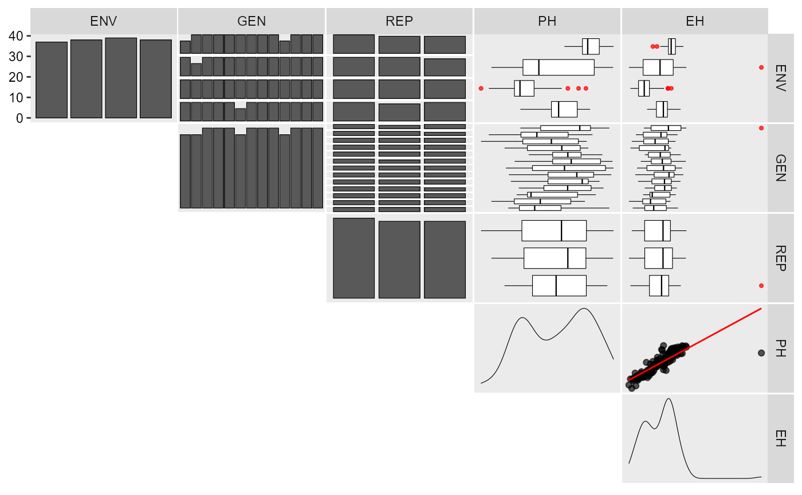

![[Stable]](figures/lifecycle-stable.svg)
inspect() scans a data.frame object for errors that may affect the use
of functions in metan. By default, all variables are checked regarding
the class (numeric or factor), missing values, and presence of possible
outliers. The function will return a warning if the data looks like
unbalanced, has missing values or possible outliers.
Arguments
- .data
The data to be analyzed
- ...
The variables in
.datato check. If no variable is informed, all the variables in.dataare used.- plot
Create a plot to show the check? Defaults to
FALSE.- threshold
Maximum number of levels allowed in a character / factor column to produce a plot. Defaults to 15.
- verbose
Logical argument. If
TRUE(default) then the results for checks are shown in the console.
Value
A tibble with the following variables:
Variable The name of variable
Class The class of the variable
Missing Contains missing values?
Levels The number of levels of a factor variable
Valid_n Number of valid n (omit NAs)
Outlier Contains possible outliers?
Author
Tiago Olivoto tiagoolivoto@gmail.com
Examples
# \donttest{
library(metan)
inspect(data_ge)
#> # A tibble: 5 x 9
#> Variable Class Missing Levels Valid_n Min Median Max Outlier
#> <chr> <chr> <chr> <chr> <int> <dbl> <dbl> <dbl> <dbl>
#> 1 ENV factor No 14 420 NA NA NA NA
#> 2 GEN factor No 10 420 NA NA NA NA
#> 3 REP factor No 3 420 NA NA NA NA
#> 4 GY numeric No - 420 0.67 2.61 5.09 0
#> 5 HM numeric No - 420 38 48 58 0
#> No issues detected while inspecting data.
# Create a toy example with messy data
df <- data_ge2[-c(2, 30, 45, 134), c(1:5)]
df[c(1, 20, 50), c(4, 5)] <- NA
df[40, 5] <- df[40, 5] * 2
inspect(df, plot = TRUE)
#> # A tibble: 5 x 9
#> Variable Class Missing Levels Valid_n Min Median Max Outlier
#> <chr> <chr> <chr> <chr> <int> <dbl> <dbl> <dbl> <dbl>
#> 1 ENV factor No 4 152 NA NA NA NA
#> 2 GEN factor No 13 152 NA NA NA NA
#> 3 REP factor No 3 152 NA NA NA NA
#> 4 PH numeric Yes - 149 1.71 2.52 3.04 0
#> 5 EH numeric Yes - 149 0.75 1.41 3.35 1
#> Warning: Considering the levels of factors, .data should have 156 rows, but it has 152. Use 'as_factor()' for coercing a variable to a factor.
#> Warning: Missing values in variable(s) PH, EH.
#> Warning: Possible outliers in variable(s) EH. Use 'find_outliers()' for more details.

# }